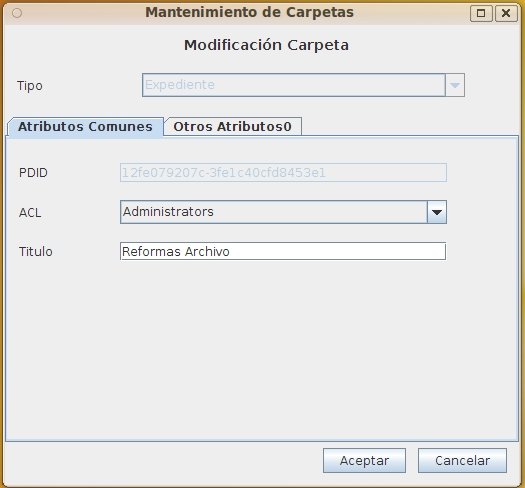

Este formulario permite modificar la carpeta seleccionada introduciendo todos los metadatos comunes y los propios del tipo de carpeta elegido. No permite modificar el tipo de carpeta, que no puede cambiarse tras crear la carpeta, y permite modificar la seguridad (ACL). Los metadatos específicos de ese tipo aparecen en otra solapa (en la versión Swing) o en una zona por debajo (en la versión Web), además de los metadatos comunes a todas las carpetas OPD.
La lista de opciones a elegir para los distintos metadatos puede variar según los permisos del usuario.
Debe introducirse la información siguiente:

Los campos obligatorios para cada tipo apareceran resaltados. Al situarse el cursor o ratón sobre cada campo, aparecerá un mensaje emergente o un texto en la banda de inferior del formulario con información sobre el campo y (en el caso de los campos de tipo fecha u hora) el formato esperado. Los campos de tipo fecha/hora deben ser valores válidos y seguir el formato esperado, en otro caso el campo se limpia y el valor se rechaza.
En caso de producirse un error (carencia de permisos del usuario, error de comunicaciones, fecha incorrecta, etc), la operación se cancela y se comunicará al usuario el motivo del error.